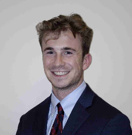
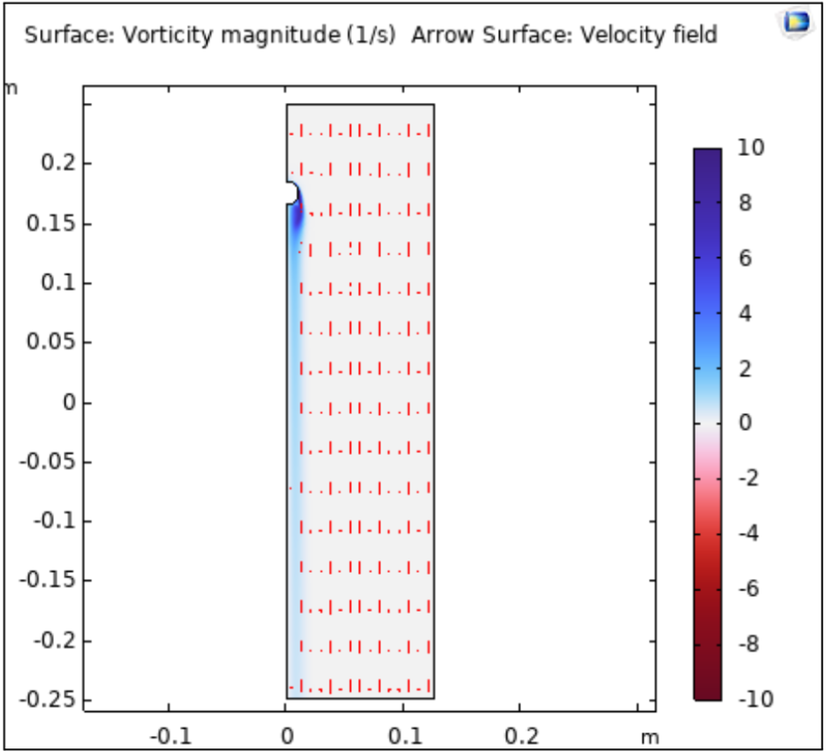

Fall 2025 - Gevelber Labs @ Boston University
I spent the fall semester working with Professor Micheal Gevelber as an undergraduate researcher focused on engineering decarbonzation strategies for Boston University.
I'm a mechanical engineering student with a passion for innovation in the built environment, sustainability, and applied mathematics.
Hey there! My name is Graham Ballantyne, and I'm an incoming junior studying at Boston University's College of Engineering. From contributing to complex mechanical building systems to researching the future of nuclear energy generation, I’m driven by a commitment to technical rigor, attention to detail, and engineering excellence.
On campus, you can find me leading tech-driven skill-development workshops, organizing hackathons that challenge students to push further, or brainstorming net-zero solutions for Boston University’s building systems. Otherwise, I’m probably reading, putting together a Spotify playlist, or running along the Charles River.
I'm driven by the challenge of designing innovative systems that actually work; systems where performance, efficiency, and attention to detail really matter. If you're tackling a problem that seems impossible, count me in.

I spent the fall semester working with Professor Micheal Gevelber as an undergraduate researcher focused on engineering decarbonzation strategies for Boston University.
As Vice President of Technological Development of KTP, BU's premier tech professional fraternity, I led efforts to oragnize a sustainability themed hackathon.
Working with the Sustainability Team at Turner, I helped build software tools to improve diversion efficiency, and oversaw LEED reporting and engineering practices.

Led the design–build of a 6-color candy sorter, directing a four-person cross-functional team; achieved 95%+ classification accuracy at 21 pcs/min using an RGB color sensor and closed-loop actuation. Authored a complete SolidWorks assembly (60+ total parts); designed and produced 6 custom 3D-printed components; performed motor sizing and power budgeting (16 W peak); integrated 2 motor drivers.
Learn MoreConducted computational fluid dynamics (CFD) simulations in COMSOL Multiphysics to analyze steady-state incompressible flow past a rigid sphere across four discrete Reynolds number regimes. Generated detailed velocity field and vorticity contour profiles to characterize boundary layer development and wake formation. Quantified stagnation pressure distributions and drag coefficients for each regime, and evaluated deviations from theoretical predictions using Buckingham–Pi dimensional analysis to assess dynamic similarity and scaling behavior.
Learn More